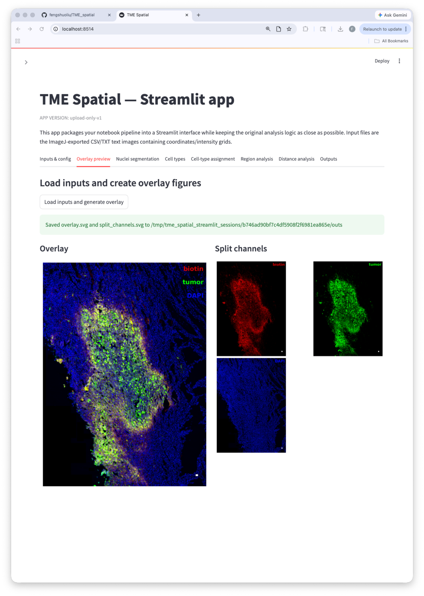
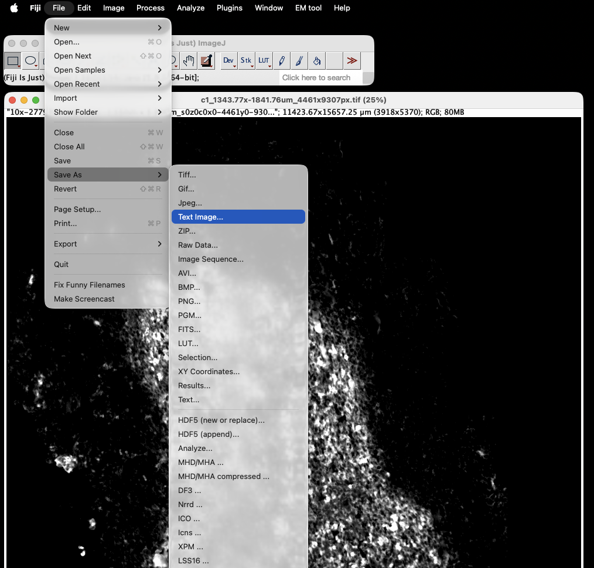
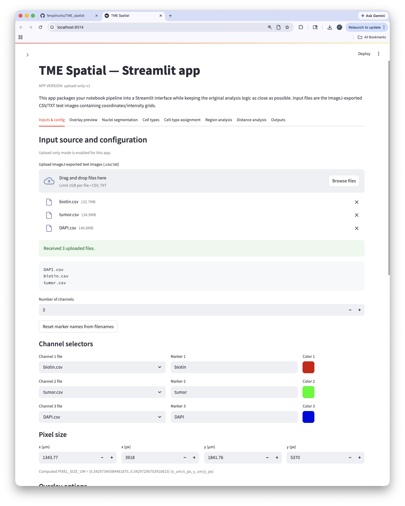
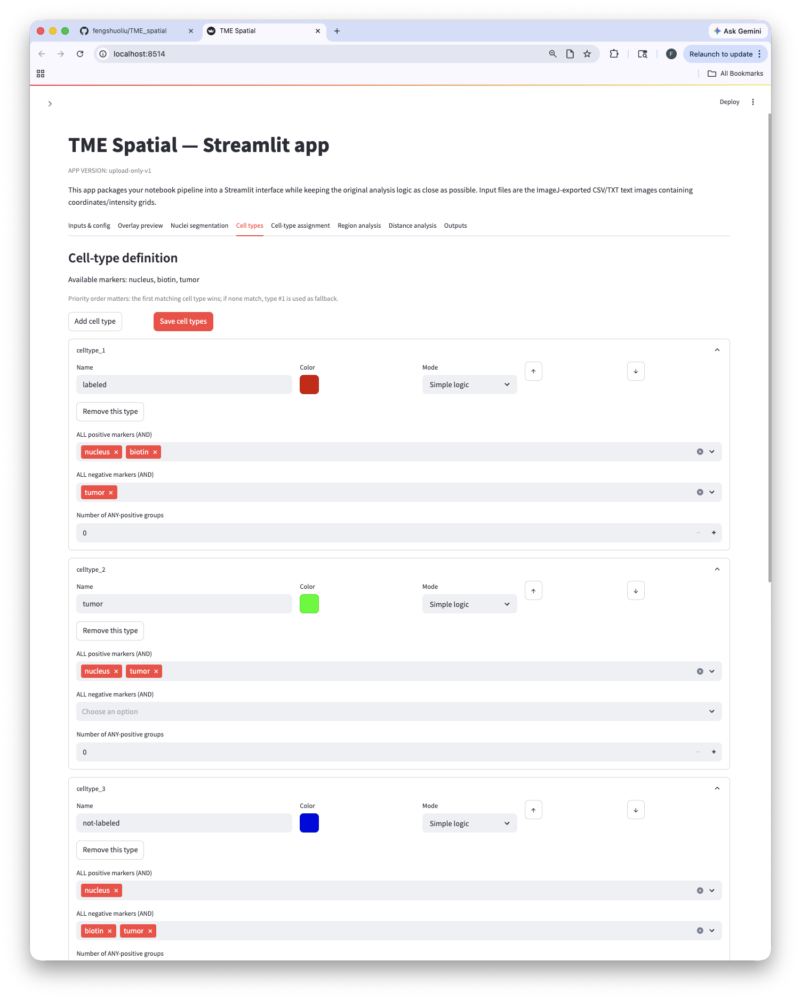
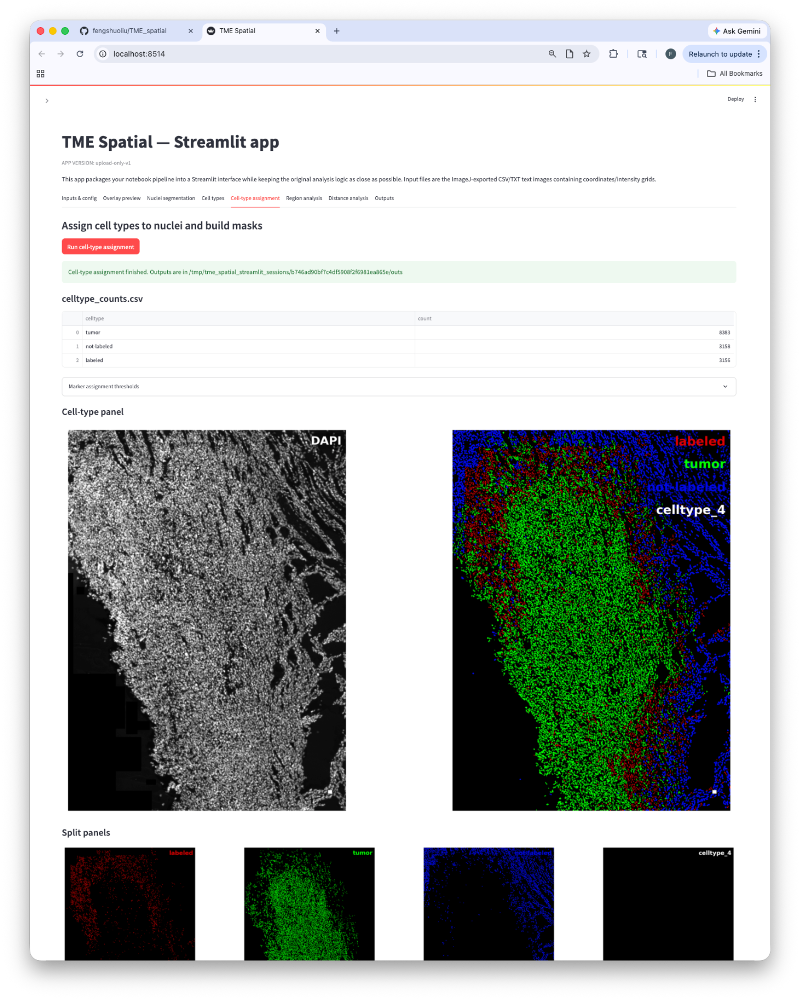
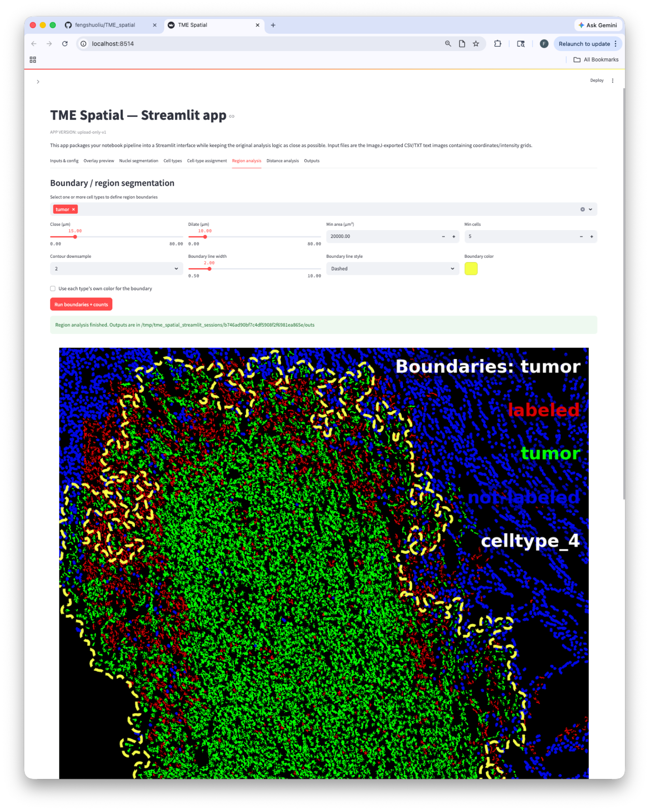
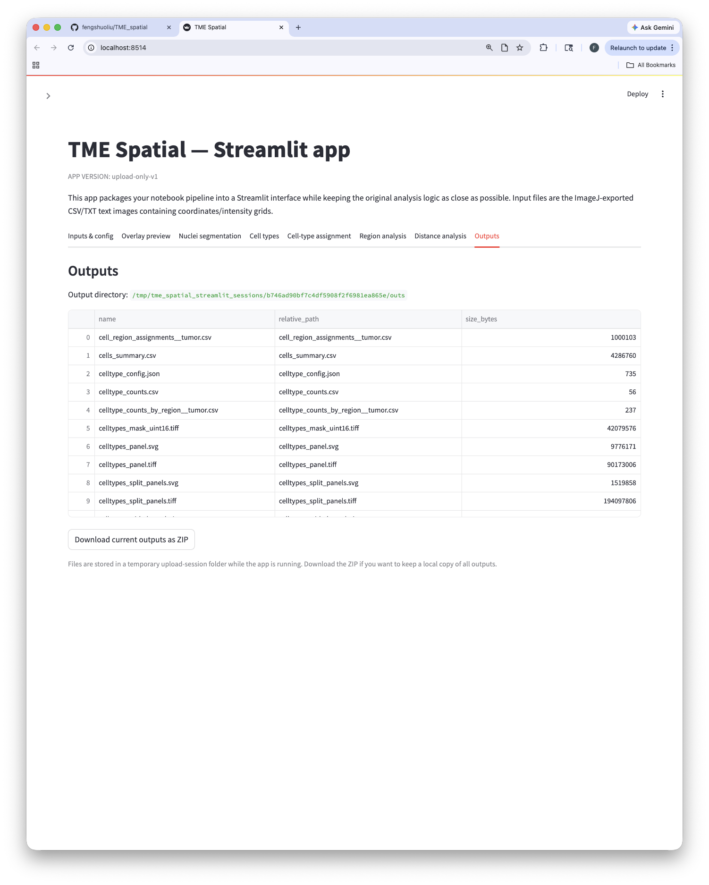
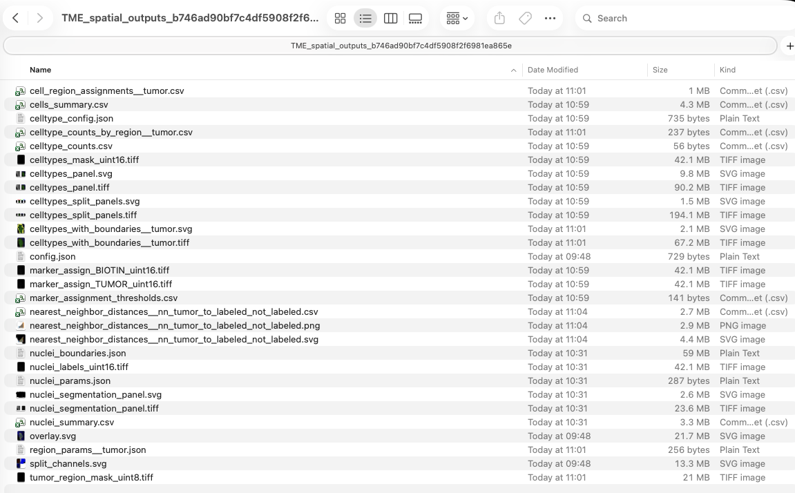

Input
ImageJ-exported text images saved as rectangular numeric grids, typically one file per marker channel.
A Streamlit app for multi-channel overlay generation, nuclei segmentation,
interactive cell-type definition, region boundary analysis, and distance-based
spatial quantification from ImageJ-exported .csv/.txt
intensity grids.

ImageJ-exported text images saved as rectangular numeric grids, typically one file per marker channel.
Channel overlays, nuclei segmentation, rule-based cell typing, region masks, nearest-neighbor distances, and cell-to-boundary distances.
SVG/TIFF figures, uint8/uint16 masks, CSV summaries, per-step JSON parameter files, and ZIP download from the app.
The figures below map directly onto the tabs in the Streamlit interface and show the expected order of operations.
Save each marker as a rectangular numeric text grid. The app accepts .csv and .txt files and auto-detects common delimiters.

Choose channel files, marker names, colors, pixel calibration, and overlay settings before saving the configuration.

Generate the composite view and split-channel panels to confirm channel mapping and signal quality.
Select the nuclear channel, tune segmentation parameters, and save masks and segmentation figures.

Build rule-based cell types with positive and negative marker logic or advanced boolean expressions.

Apply the saved rules to segmented nuclei and generate cell-level tables, marker masks, and cell-type figures.

Use one or more cell types to define a region, then refine it with closing, dilation, and filtering parameters.

Compare query cell types using nearest-neighbor distances or distances to saved boundaries.

The app lists generated files and packages the session outputs for export. This includes figures, TIFF masks, CSV tables, and JSON parameter files.

python -m venv .venv
source .venv/bin/activate
pip install --upgrade pip
pip install -r requirements.txt
python -m streamlit run app.pypy -3.11 -m venv .venv
Set-ExecutionPolicy -Scope Process -ExecutionPolicy Bypass
.\.venv\Scripts\Activate.ps1
python -m pip install --upgrade pip
pip install -r requirements.txt
python -m streamlit run app.pyThe repository README contains the full installation notes, including the Windows-specific instructions.